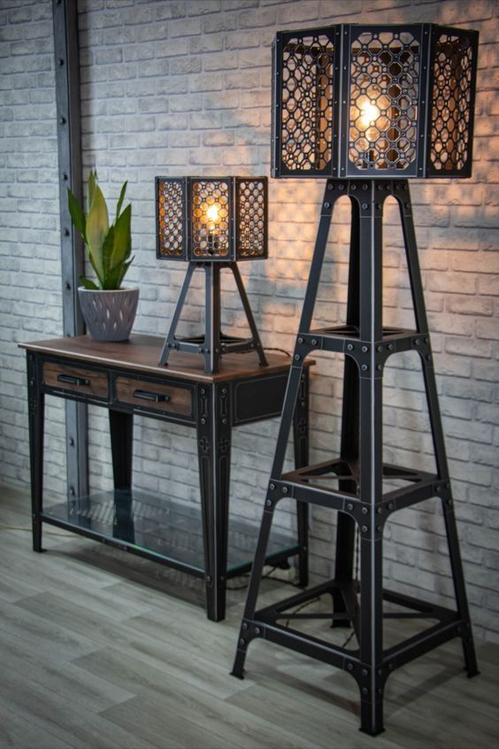
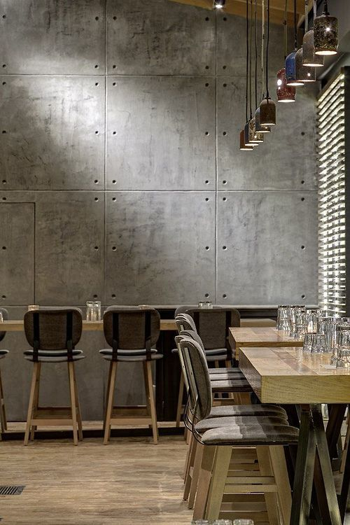
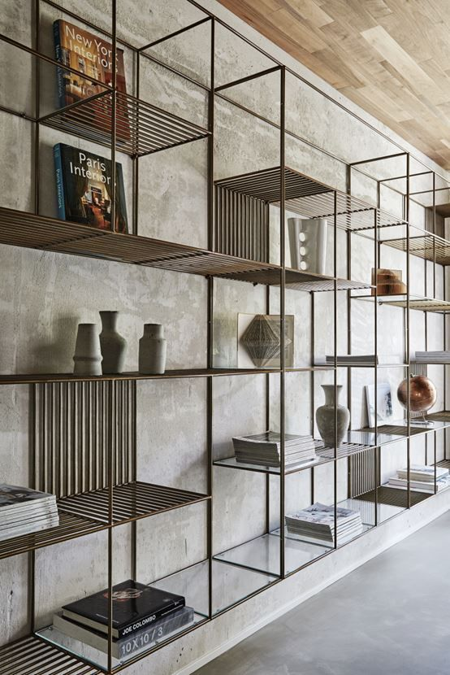
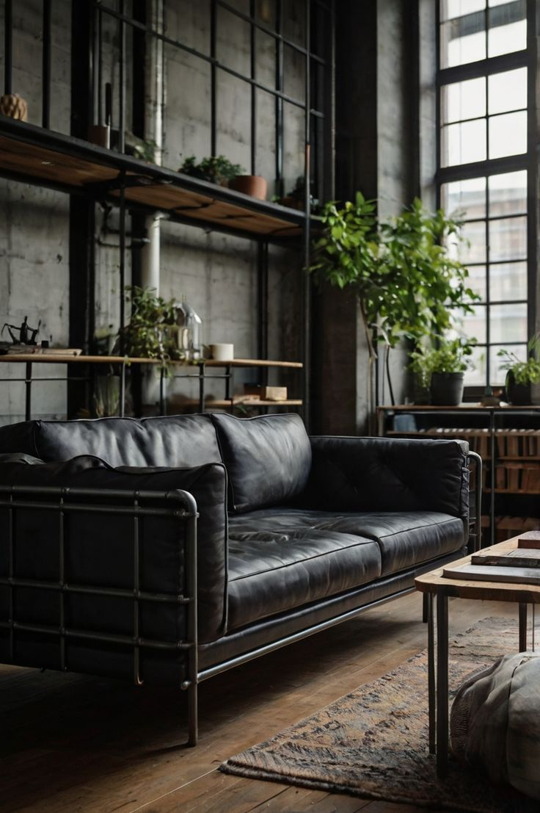

Industrial style is inspired by factories and warehouses. It focuses on functionality and strong architectural elements.
The color palette usually includes dark tones such as grey, black, brown, and metallic shades. Surfaces are often unfinished and textured.
Industrial interiors create a bold and dramatic atmosphere, especially suitable for large apartments and studios.
| Image | Source | Description |
|---|---|---|
 |
See source | Strong and durable material |
|
 |
See source | Raw unfinished texture |
|
 |
See source | Functional storage solution |
|
 |
See source | Vintage comfort element |
Combine raw materials like concrete, metal, and brick with warm elements such as wood and leather to balance the industrial atmosphere.
Industrial interiors often feature exposed brick walls, metal pipes, concrete floors, and vintage lighting fixtures.
Industrial interiors became popular when old factories and warehouses were converted into residential loft apartments in the 20th century.